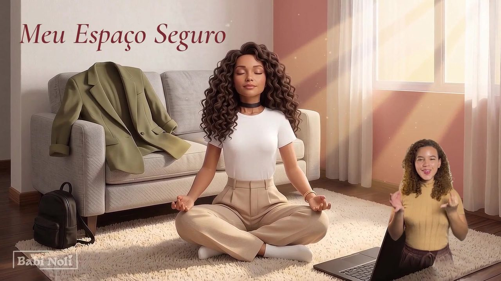

Lieder und Inhalte über Präsenz und Bewusstsein

Offizielles Musikvideo zu Meu Espaço SeguroMit Übersetzung in Libras (brasilianische Gebärdensprache) · auf YouTube ansehenIch schreibe über Präsenz, Bewusstsein und über das, was ich einen sicheren Raum nenne: jenen Ort in uns, an dem wir atmen können.
Neben der Musik studiere ich Informatik. Für mich ist KI keine Magie: Sie ist ein Werkzeug, das ich studiere, verstehe und bewusst einsetze.
Die Texte und die Grundstimme sind von mir. Die Musik entsteht mit künstlicher Intelligenz – immer offen und transparent.
 Die Skala erklärt
Die Skala erklärt